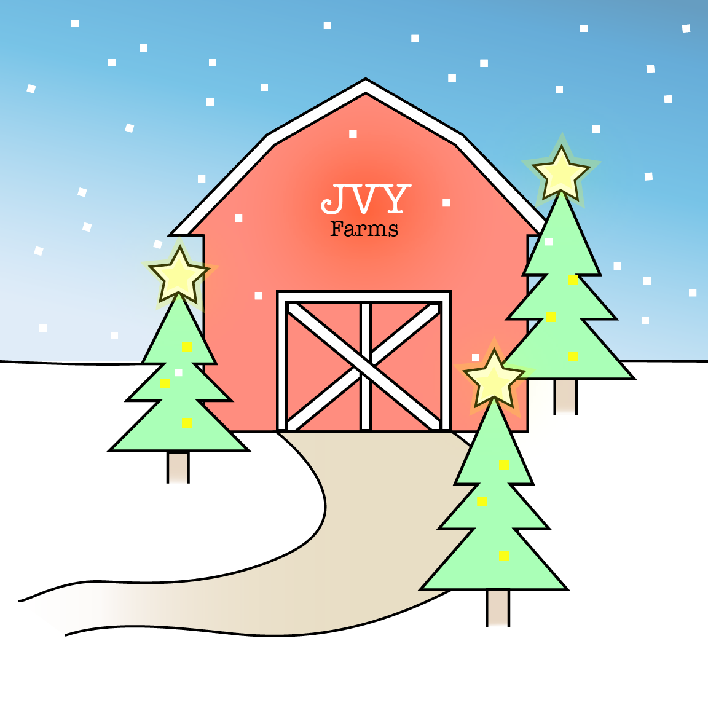

Fuzzy Fish Creature
From a photo I took of a peacock feather and various photoshop tools, I created this fish creature.

With my passion for design and my constant flow of ideas, I enjoy working in the Adobe Suite. Here are some digital artworks I created in my spare time, over the years:
From a photo I took of a peacock feather and various photoshop tools, I created this fish creature.
This was an entry piece for a contest. The challenge was to create a piece that answers the question, "Why research matters?". The winner got a ticket to the 2019 Strive UX Research Conference. In my piece, I choose to create an illustration of a puzzle to represent that without research, things would not work and pieces would not match up. Without it, the project will fall apart because the information and knowledge is not there.
Sidenote: I end up winning the ticket. :)

This drawing I had made for my friends for Christmas. We share a dream of starting a farm in the future.
Over the summer, I drew my fish tank in illustrator.

I chose to create this piece to communicate the message, do not dwell on the past. You can't change what you did, so just enjoy the present and make the most out of your future.

In my spare time, I created an illustration of myself drawn as a ninja from the hidden leaf village.

This is a graphic that I made as a volunteer project for an environmental company called ITooPlant. The symbols of the Asian flycatchers birds and fig tree represent the need to nurture Asia's population. The resources in Asia may not be able to support the growing population.

A variety of app icons was created for a fictional dog clinic. Different options were explored.